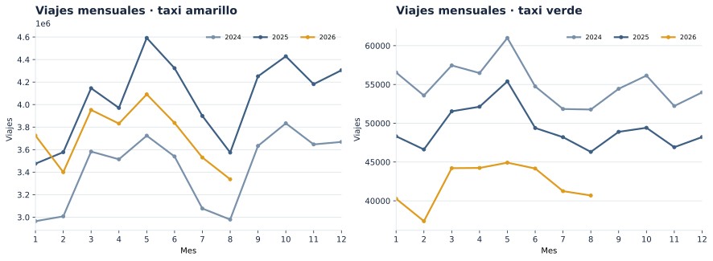
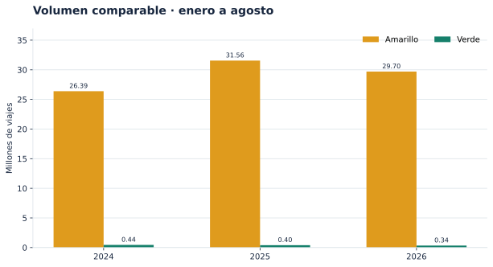
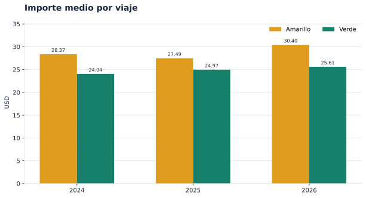
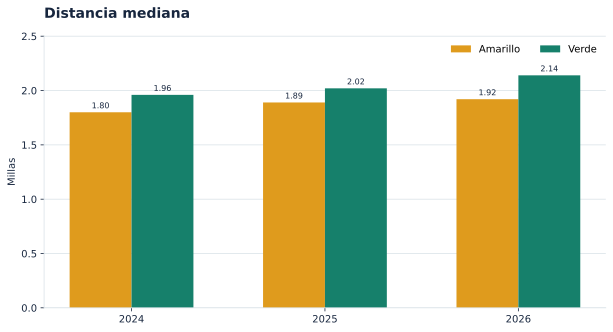
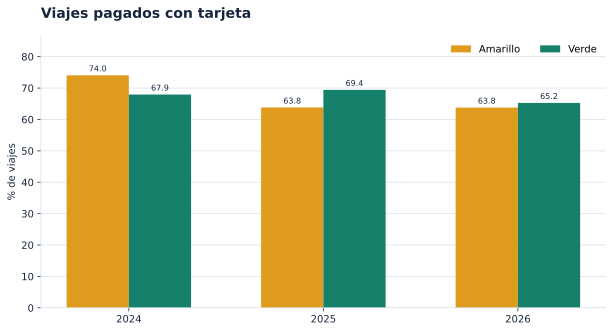
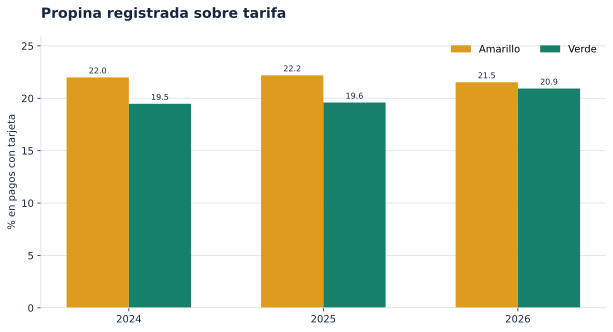
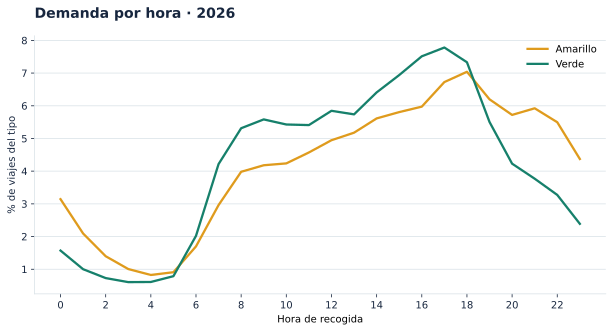

INDICADOR 01 ·
03_viajes_mensuales.sqlSerie mensual de viajes
¿Cuándo cambia la demanda de cada servicio?

El corte de 2026 termina en agosto; las líneas no extrapolan septiembre-diciembre.
Laboratorio 8 · Grupo 1 · Sección 10. Indicadores derivados de Parquet oficiales de Yellow y Green Taxi para 2024, 2025 y los meses publicados de 2026.
03_viajes_mensuales.sql¿Cuándo cambia la demanda de cada servicio?

El corte de 2026 termina en agosto; las líneas no extrapolan septiembre-diciembre.
12_comparacion_ene_ago.sql¿Cómo cambió la demanda en una ventana común?

Amarillos: +12.6% entre 2024 y 2026; verdes: -24.0%.
12_comparacion_ene_ago.sql¿Cómo evoluciona el importe cobrado por viaje?

Importes nominales en USD; la comparación no ajusta por inflación ni mezcla de rutas.
12_comparacion_ene_ago.sql¿Cambió la longitud típica de los viajes?

La mediana se calcula sobre distancias positivas y resiste mejor viajes extremos.
12_comparacion_ene_ago.sql¿Qué fracción de viajes se paga con tarjeta?

El código 1 de payment_type se identifica como tarjeta según el diccionario TLC.
12_comparacion_ene_ago.sql¿Qué parte de la tarifa representan las propinas?

Se consideran pagos con tarjeta y tarifas positivas; las propinas en efectivo pueden no registrarse.
06_horas.sql¿A qué hora se concentra la demanda de cada taxi?

Pico amarillo: 18:00; pico verde: 17:00 en 2026.